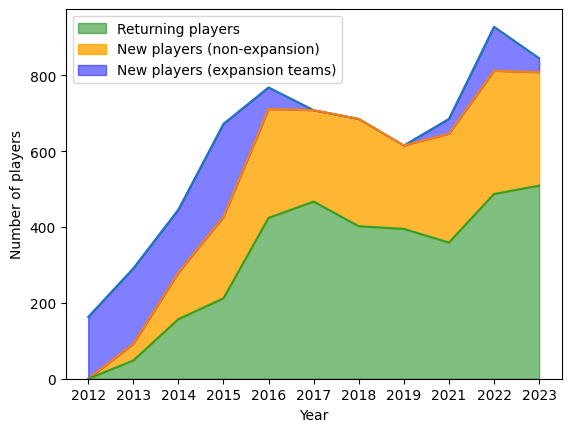
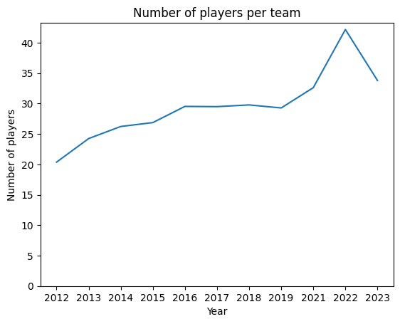
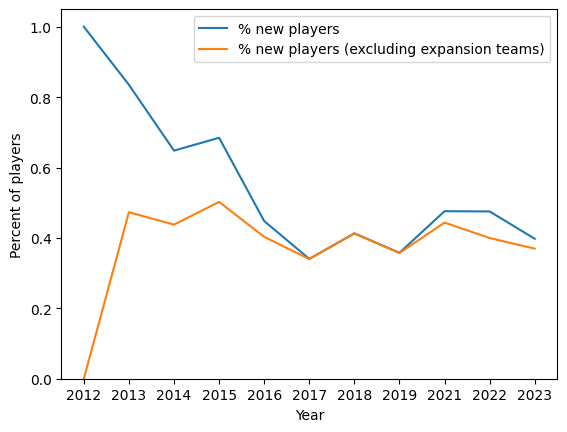

From my point of view, it appears that the talent in the AUDL has risen gradually over the ten years of its
existence. The league has managed to draw top players and now most top male players play in the
AUDL. In this vein, that means that the talent should be somewhat stable - generally, players should leave the
league when they retire or are displaced by newer players, and newer players should enter the league when they
hae the requisite skills. Another way to state this is if you are drawing from a larger
group of less talented players (as the AUDL did in the earlier years of its existence), there usually can
be more roster changes year to year. It seems that with more and more of the top players playing in the AUDL, the talent
should become more static; that is, the same players should stay in the league year after year (for the most part).
However, I have no data to back this up. In this blog post I'll examine the stability of the the player
makeup of the AUDL.
Teams
The number of teams in the AUDL mostly stabilized after the firs three years. The makeup of the teams in
the AUDL is summarized in the below table. I'm taking this data from
this great reddit post.
Year
Teams
Expansion Teams
Folds
2012
8
8
0
2013
12
7
3
2014
17
6
1
2015
25
9
1
2016
26
2
1
2017
24
0
2
2018
23
0
1
2019
21
0
2
2021
22
1
0
2022
25
3
0
2023
24
1
2
Players
Let's look the composition of the league in terms of players. Thanks to the
AUDL stats API, this is fairly easy.
First, we'll look at the composition of the league over time.

A few takeaways:
The number of returning players has gradually increased
The total number of players has increased. I wonder if the number of
players per team has increased. It turns out it has:

There still are significant numbers of players joining non-expansion
AUDL teams every year
Let's look at the percent of players who are new over time.

Surprisingly, when expansion teams are removed, the percent of new players on a team has been relatively
stable at about 40% since the league's founding. I would have expected this number to have decreased over time.
In contrast, the NBA has
approximately 500 players each season and takes in about 70 new ones,
meaning about 14% of the league is new each year (note that this isn't exactly right as there are
some oddities in terms of bringing players up from the G-league, etc, but they are correct enough for
our purposes).
Conclusion
My intuition was wrong. The AUDL's talent pool has not gotten more stable over the course of its existence.
I still think this could change moving forwards. The AUDL has not managed to get all of the top talent
in the US, and their franchises still fold and spring up anew regularly. As they move towards more
franchise stability and contracts keep getting sweeter, I would expect the talent to be less in flux
moving forward. However, only time will tell.